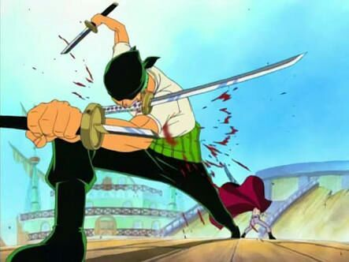
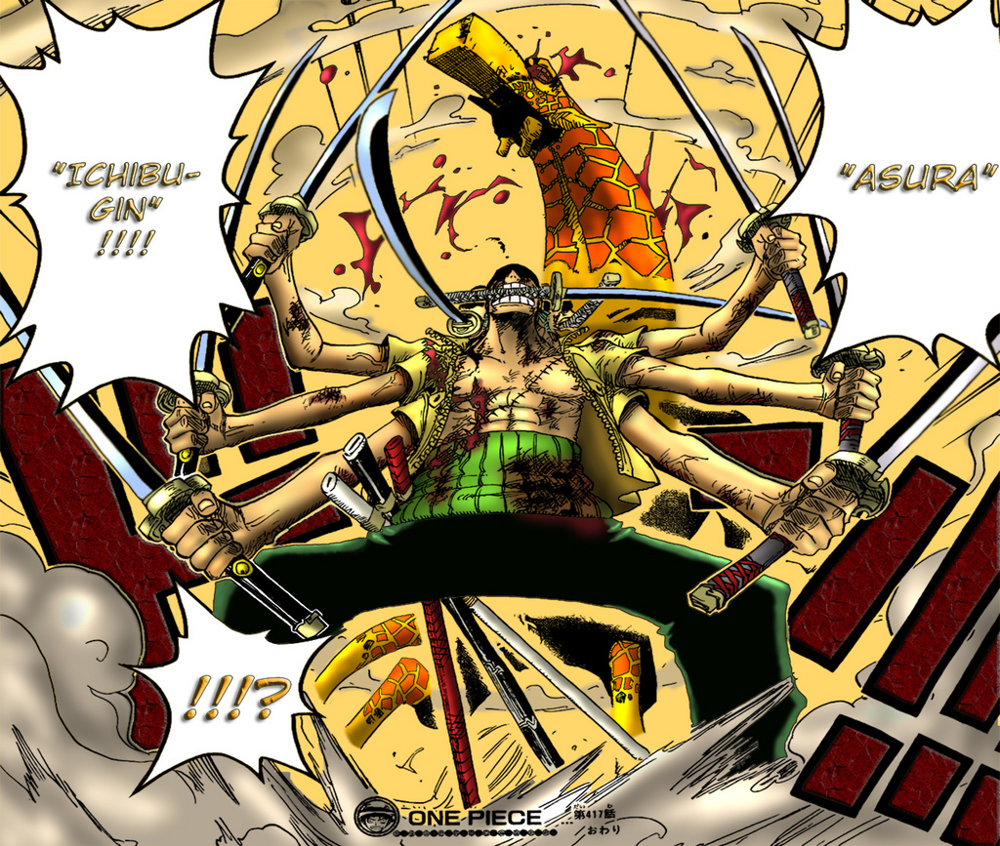
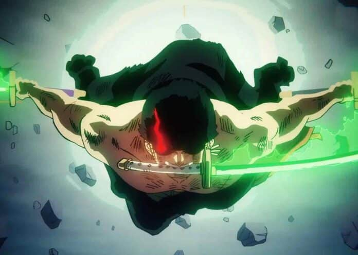

Etapas de zoro Roronoa en one piecce
Zoro Roronoa

- Zoro ya aparecía como un “cazador de recompensas” antes de unirse a la tripulación.
- Fue rescatado por Monkey D. Luffy en una base de la Marina, y tras esto aceptó unirse a su tripulación — los Sombrero de Paja.
- Esta etapa representa sus orígenes, sus primeras batallas y su juramento de nunca rendirse, además de empezar su camino hacia convertirse en el mejor espadachín.
🔹 “Paraíso” / Grand Line temprano (antes del salto temporal)

- Durante esta fase, viaja por el East Blue y llega al Grand Line (la primera mitad del mar difícil), enfrentando varios enemigos y desafíos
- Es aquí cuando se enfrenta por primera vez al gran espadachín Dracule Mihawk — su derrota marca un punto clave: Zoro jura nunca volver a perder, consolidando su determinación.
- Se define su estilo de lucha: el Santōryū (usar tres espadas), y su sueño de ser “el mejor espadachín del mundo”.
🔹 Post-salto temporal (Timeskip) — “Nuevo Mundo”

- Tras el salto de dos años, Zoro reaparece mucho más fuerte, con cambios físicos: su estatura, musculatura; además luce cicatrización en el ojo izquierdo.
- Su vestimenta también cambia: ahora lleva un abrigo largo verde oscuro, faja roja, y su bandana negra más presente para cuando combate.
- Esta fase marca su transformación: ya no es solo un aprendiz, sino un espadachín mucho más poderoso, preparado para los retos del “Nuevo Mundo”.
🔹 Fase “Épica” / Arco Wano Kuni — El gran poder & legado

- En este arco, Zoro obtiene la legendaria espada Enma, lo que representa un enorme aumento de poder.
- Además despliega habilidades avanzadas — muchos fans consideran que Wano representa su momento de mayor desarrollo y consolidación como espadachín fuerte y determinante.
- Este arco también conecta con su pasado: Zoro tiene vínculos con la familia Shimotsuki, lo que añade profundidad a su historia personal.